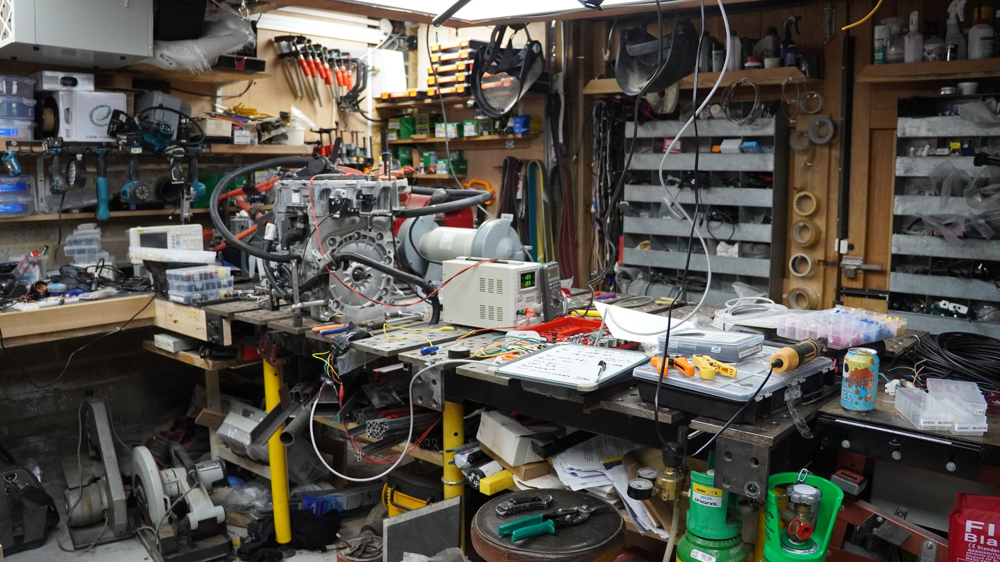
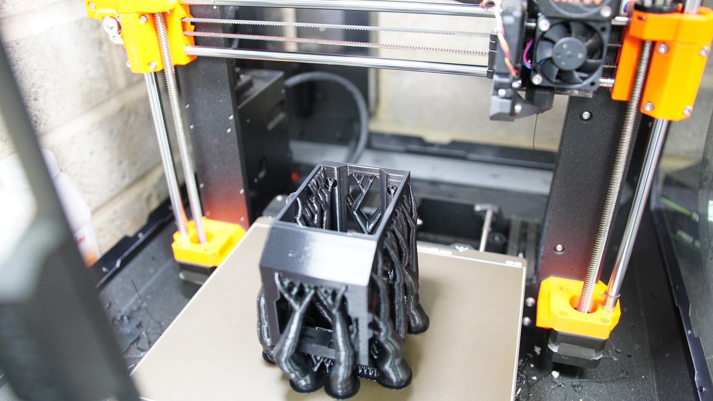
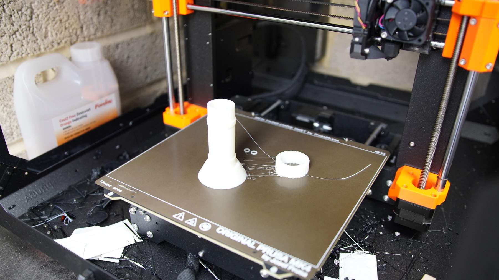
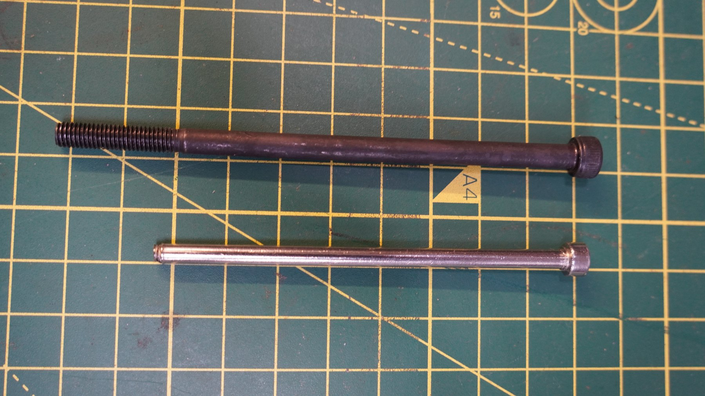
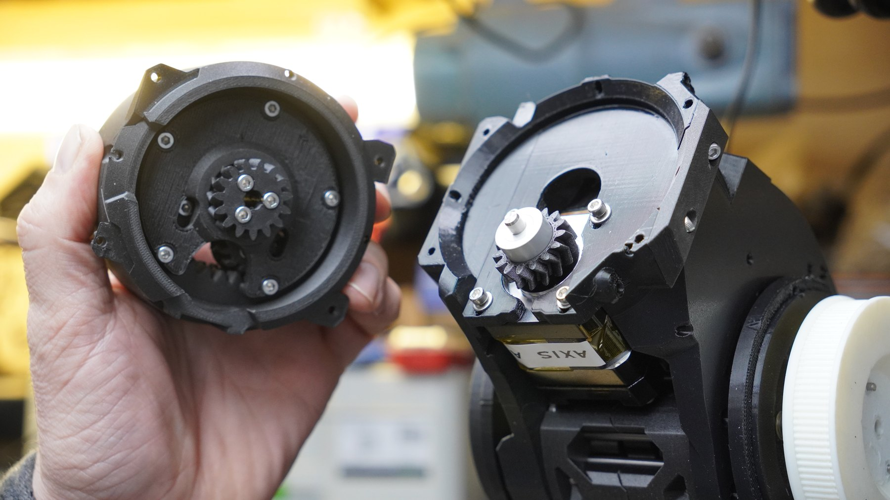
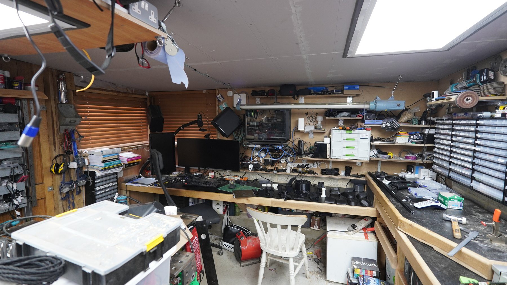

A robot arm, because simulated robots are too well behaved.
This one is not finished, which is partly the point. It is a home-built robot-arm platform for
learning where the real difficulty lives: printed mechanics, reducers, bearings, servo drives,
wiring, calibration, control and eventually robot-learning experiments on hardware that can
actually sulk.
It connects directly to my MSc and robot-learning work: MuJoCo simulation, OpenVR teleoperation,
data capture, policy training and the persistent question of what transfers when the robot is
no longer made of perfect maths.
Printed parts, bearings, reducers and that optimistic phrase: it should work.
Mechanics
Printing the hard bits first.
The build uses printed structural parts and joint components, which makes iteration fast but
also forces the awkward questions early: stiffness, backlash, fit, tolerances and where plastic
stops being charming.
Actuation
Torque is where optimism goes to be tested.
Servo motors and compact reducers are the bridge between a CAD idea and a useful arm. The
cycloidal sections are especially interesting because they turn the project into a mechanical
experiment, not just an assembly exercise.
Electronics
Every joint wants its own little argument.
The electronics and wiring work is about making motion controllable and repeatable. That means
motor drives, feedback, connectors, power, signal integrity and enough instrumentation to know
whether the problem is code, mechanics or a tiny connector being dramatic.
Purpose
A physical test bed for learning.
The end goal is not just a nice moving sculpture. It is a platform for testing policies,
collecting data, comparing simulation with hardware, and discovering the reality gap in the
least theoretical way possible.
Build loop
Print, assemble, wire, test, rethink.
The raw folder is a proper build diary, so the clips here are deliberately short: printing arm
parts, laying out actuator components, bench electronics, hand-testing a joint, assembling the
larger arm structure and a little metalwork from the later stages.
It is very much a work in progress, but it already shows the thing I like most about robotics:
you cannot hide from the physical system for long.
Printed mechanism parts
The 3D printer quietly manufacturing future problems, which is exactly why it is useful.
Cycloidal reducer layout
Bearings, printed lobes, fasteners and the little mechanical puzzle at the centre of the joint.
Servo electronics
Motor control on the bench: cables, boards, meters and the familiar ritual of checking what is actually moving.
Arm assembly
The point where separate clever pieces become one larger, less-forgiving machine.
Metalwork cameo
Some later-stage fabrication energy, because the project refuses to stay purely plastic.

The natural habitat: parts, tools, machines, cables and at least three things asking to be calibrated.

The MK4 earning its keep by printing robot-arm parts.

Printed part, fresh from the bed, before reality has had its say.

Rods and fasteners: small things that decide whether big things move properly.

Joint assemblies side by side, because one axis is never enough.

The Victorian inventor's shed, but with better stepper drivers.